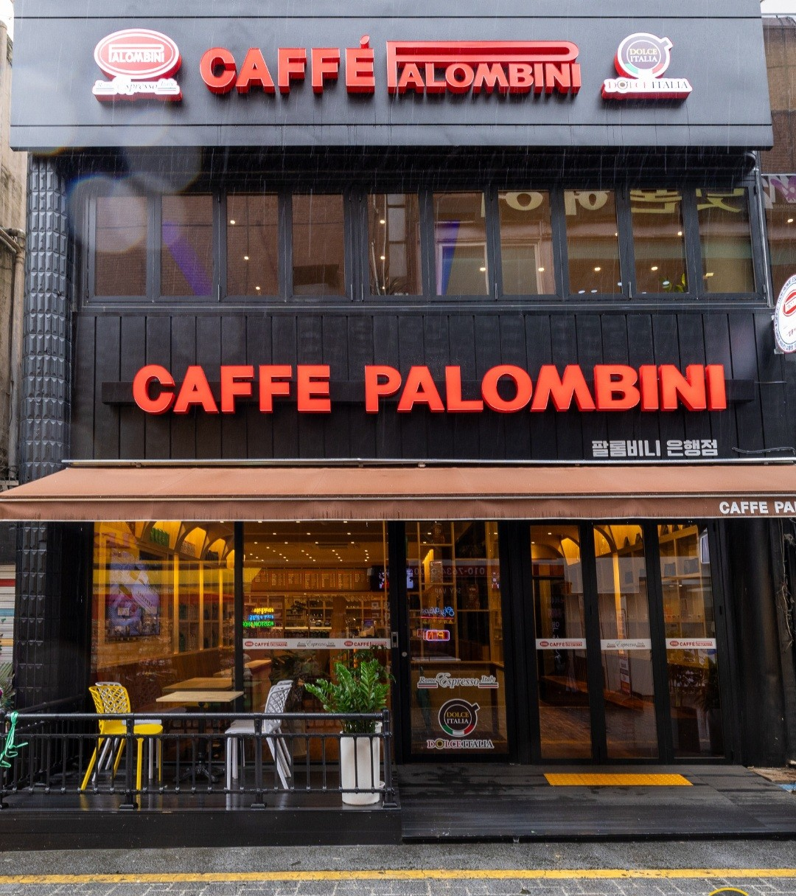
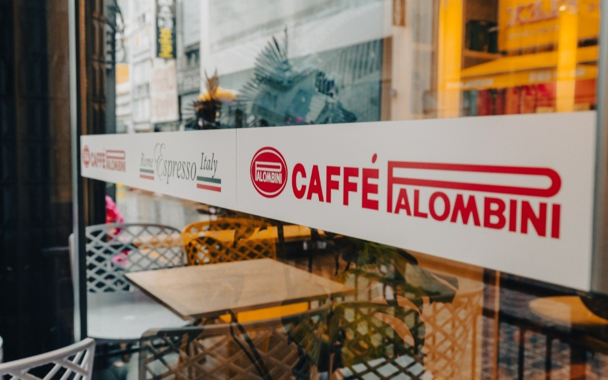
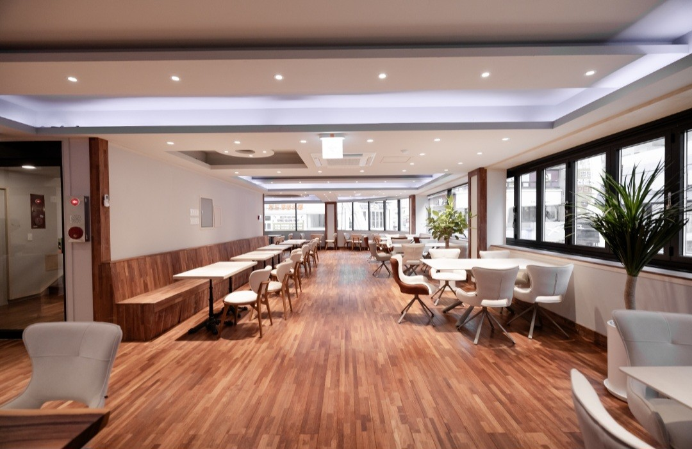
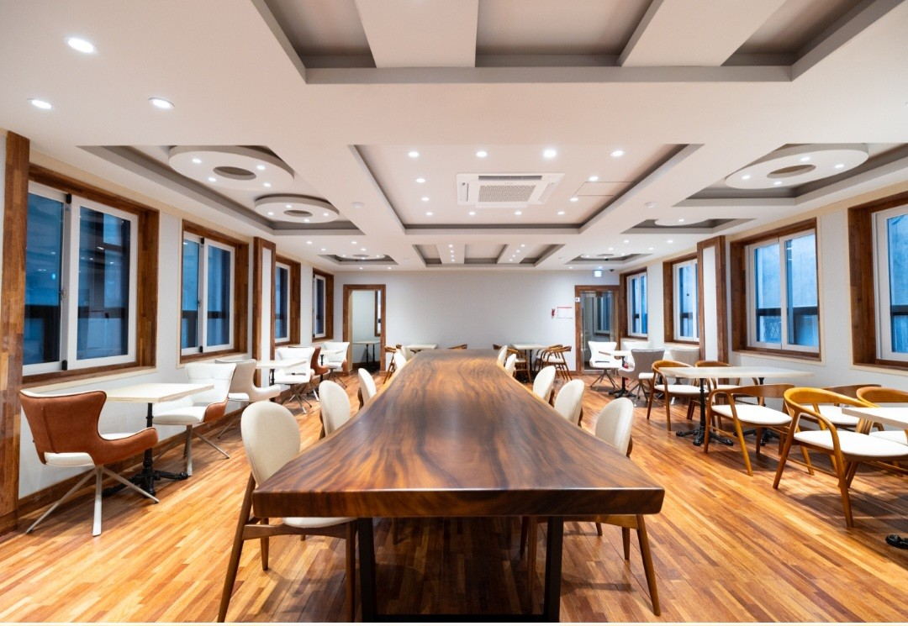
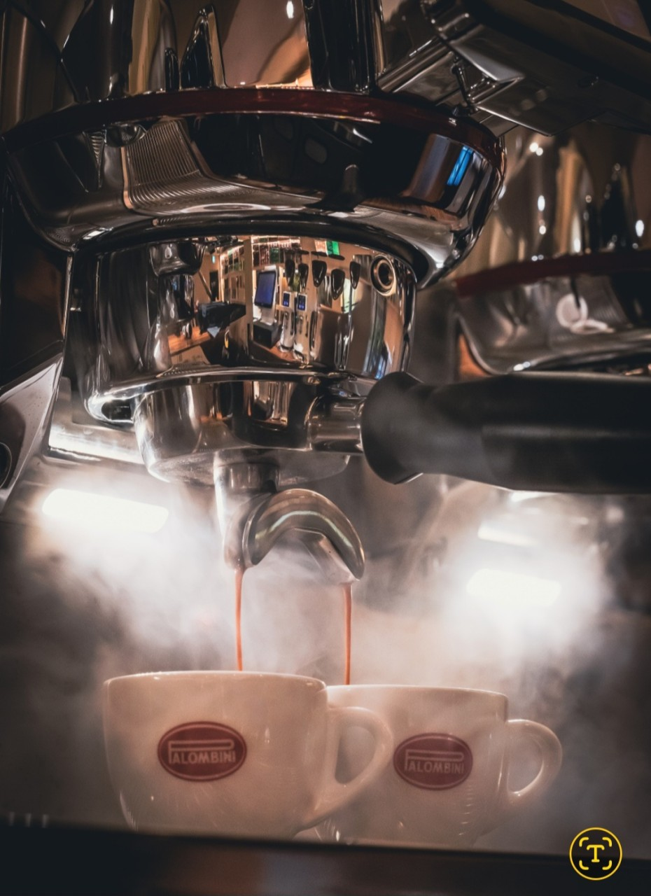

Your Complete Coffee Partner
생두에서 자동화 패키지까지,
커피 브랜드를 완성합니다.
About Us
PNS 팔롬비니는 단순한 커피 브랜드가 아닙니다.
이탈리아 로마 Caffè Palombini(1946)의 로스팅 헤리티지와 베트남 화산토에서 자란 볼케이노 루비 원두,
그리고 국내 자체 생산 인프라를 결합하여 원두 수입부터 드립백 OEM, 봉투 필름지, 패키징 장비까지 —
커피 브랜드가 필요로 하는 모든 것을 하나의 파트너로 제공합니다.





Mission
커피의 가치를 완성하는 모든 과정을,
하나의 파트너로.
원두 소싱부터 로스팅, 드립백 생산, 봉투 필름지, 패키징 장비까지 — 흩어진 공정을 하나로 연결하여 파트너사의 시간과 비용을 줄이고, 최종 제품의 품질을 높입니다.
Vision
모든 커피 브랜드의
첫 번째 생산 파트너.
"커피 브랜드를 시작하려면 PNS 팔롬비니부터" — 소규모 카페 창업자부터 대량 유통사까지, 가장 먼저 떠오르는 원스톱 생산 파트너가 되겠습니다.
Core Values
원스톱
원두부터 최종 패키지까지 한곳에서. 복잡한 공급망을 단순화합니다.
유연함
50개 소량 주문부터 대량 OEM까지. 규모에 맞는 맞춤 솔루션.
품질
99% 실버스킨 제거 Inside-Out 공정. 이탈리아 헤리티지 기준의 품질.
파트너십
단순 납품이 아닌 함께 성장. 브랜드 기획부터 생산까지 동반합니다.
실버스킨을 99% 제거하는 기술
커피 원두를 감싸는 얇은 막, 실버스킨(은피).
대부분의 로스팅 공정에서 놓치는 이 잔여물이 컵 품질을 좌우합니다.
실버스킨, 원두 안쪽에 숨은 막
실버스킨은 커피 체리의 가장 안쪽에서 원두를 직접 감싸는 얇은 보호막(종피)입니다. 생두 건조 중량의 약 4~5%를 차지하며, 주성분은 셀룰로스·헤미셀룰로스(60%+)와 클로로겐산, 멜라노이딘 등입니다.
로스팅 중 표면의 실버스킨은 열과 팽창으로 '채프(chaff)'로 분리되지만, 센터 컷(중심 홈) 안쪽에 접혀 들어간 실버스킨은 일반 로스팅으로 제거되지 않습니다.
실버스킨 잔류가 맛에 미치는 영향
클로로겐산
떫은맛(astringency)과 쓴맛의 주요 원인. 로스팅 중 락톤으로 변환되어 쓴맛에 직접 기여합니다.
멜라노이딘
마이야르 반응 생성물. 실버스킨에 불균일하게 분포하며 거친 뒷맛과 탄 인상을 만듭니다.
식이섬유 60%+
셀룰로스·리그닌으로 구성된 종이 같은 질감. 커피 음료에 기여하는 것 없이 탁함만 더합니다.
Hexanal 외 휘발성
지방향, 녹색(green) 계열의 불쾌한 향기 물질이 섬세한 원두 향을 가립니다.
일반 로스팅의 한계
표면의 실버스킨은 열풍·팽창으로 '채프'로 분리되지만, 센터 컷(중심 홈) 안쪽에 접혀 들어간 실버스킨은 제거되지 않습니다.
분쇄 시 비로소 노출되는 이 잔여물이 컵에서 거친 뒷맛, 떫은 질감, 탁한 향으로 나타납니다.
Inside-Out: 센터 컷까지
우리는 겉에서 떨어지는 채프가 아니라, 원두 안쪽 홈에 남는 미세 실버스킨까지 다룹니다.
원두의 안쪽 잔여물까지 포함해 99% 수준으로 실버스킨을 제거(자체 공정 기준)하는 "Inside-Out" 프로세스를 구축했습니다.
결과: 컵에서 느껴지는 차이
더 깨끗한 첫 향
탁함 없이 또렷하게 올라오는 아로마. 원두 본연의 캐릭터가 선명해집니다.
더 매끈한 질감
떫은 뒷맛과 종이 같은 거친 질감 대신, 실크처럼 부드러운 피니시.
더 선명한 단맛
쓴맛의 그림자가 걷히면 숨어 있던 단맛과 여운이 비로소 드러납니다.
학술 근거 — 정유현(2022), "볶은 커피 원두 실버스킨 제거에 따른 성분·향기 분석", 한국커피문화연구.
GC-MS 및 전자코 분석 결과, 실버스킨 제거 커피가 일반 커피 대비 맛과 향이 현격히 향상됨을 확인.
Our Heritage & Sourcing
The Italian Connection — Caffè Palombini
우리가 협업하는 Caffè Palombini는 로마에서 1940년대에 시작된 로스터리로, 창립자 Giovanni Palombini의 비전에서 출발했습니다.
Palombini는 교황 바오로 6세가 즐겨 마신 커피로 언급되어 왔고, 로마의 '프로페셔널' 에스프레소를 지향해온 브랜드 스토리를 갖고 있습니다.
Palombini는 Ho.Re.Ca.(호텔·레스토랑·카페) 채널을 중심으로 로마의 프로페셔널 에스프레소 문화와 함께 성장한 브랜드입니다.
The Vietnamese Origin — Volcanic Terroir
베트남 중부고원은 화산 분출로 형성된 비옥한 현무암 토양이 넓게 분포하며, 영양분이 풍부하고 다공성(배수·통기)이 좋아 커피 같은 다년생 작물 재배에 적합합니다.
이 지역의 '레드 바잘트(붉은 현무암) 토양'과 고지대 환경이 체리의 느리고 균일한 성숙에 기여하고, 결과적으로 더 나은 컵 품질로 이어질 수 있습니다.
현지(닥락) 공식 자료 역시 붉은 현무암 토양 지대의 로부스타가 향과 풍미가 뚜렷한 품질을 만든다고 언급합니다.
Products
프리미엄 드립백 커피부터 드립백 패키징 머신까지 — PNS 팔롬비니의 전체 라인업.


☕ Premium Drip Bag Coffee
프리미엄 드립백 커피
이탈리아 헤리티지 Caffè Palombini × 베트남 화산 토양. 99% 실버스킨 제거 Inside-Out 공정으로 더 깨끗하고 선명한 한 잔.

Signature Coffee
볼케이노 루비
베트남 화산토에서 자란 프리미엄 로부스타를 내추럴 프로세스로 완성한 시그니처 원두입니다. 진한 바디감 위에 체리 계열의 인상과 자연 단맛이 이어지고, 마지막에는 스모키한 여운이 길게 남습니다.
나만의 시그니처 패키지
커스텀 에디션
내 로고, 캐릭터, 일러스트, 텍스트—
어떤 디자인이든 드립백 위에 담아드립니다.
결혼식 답례품부터 카페 PB 상품까지, 최소 50개부터 주문 가능합니다.


For Partners — Business Solutions (B2B)
드립백 생산 현장 보기 →커피 브랜드를 "제품"이 아니라 시스템으로 제공할 수 있어야 한다고 믿습니다. 원두 선별부터 패키징, OEM 설계까지—전체 생태계를 함께 구축합니다.
Optical Bean Selectors
결점두·이물 선별을 통한 품질 표준화. 균일한 원두 품질을 유지하는 핵심 공정입니다.
Drip Bag Machines
드립백 생산 자동화·안정화. 소규모 스타트업부터 대량 생산까지 맞춤 설계합니다.
Aluminum Packaging
차광·차습 중심의 알루미늄 패키징 옵션. 질소 충전으로 신선도를 극대화합니다.
OEM / ODM & Custom Design
제품 설계부터 패키지 디자인까지 맞춤 제작. 귀사의 브랜드로 완성해 드립니다.
B2B 파트너십, 대량구매, OEM 문의는 아래 연락처로 편하게 연락주세요.
고객 후기
실제 구매하신 분들의 솔직한 이야기입니다.
다른곳 드립백과는 차원이 달라요. 맛은 깊이 있으면서 향은 풍미가 짙어요. 다음에 또 주문할 거 같아요. 강추합니다.
카페쇼에서 먹어보고 인생커피다 생각들어서 주문했어요! 배송 시작하고 금방 오고 좋았습니다.
깔끔한 커피맛이에요 데일리로 부담없이 먹기 좋네요. 한 상자 한 달도 안 되서 소진했어요.
맛있어요. 더 유명해지면 좋겠어요. 유통기한 아주 넉넉하고, 포장 꼼꼼하고, 맛 만족도 맛있어요.
더 많은 후기가 궁금하신가요?
네이버 스토어에서 전체 리뷰 보기 →자주 묻는 질문
구매 전 궁금하신 점을 미리 답해드립니다.
봉투를 개봉하여 드립백을 꺼내주세요.
드립백을 양쪽으로 벌려 클립을 컵에 고정해주세요.
뜨거운 물 15ml를 부어 전체를 촉촉하게 적신 후 15초 뜸 들이기. 이후 35ml 물을 약 3~4차례 나누어 부어주세요.
💡 온도 팁: 부드러운 맛은 85°C, 진한 맛은 92°C 온수를 사용하시면 더 맛있어요!
실버스킨(차프)에는 클로로겐산, 트리고넬린, 카페인 등 쓴맛과 떫은맛에 기여하는 성분이 포함되어 있습니다. 연구에 따르면 실버스킨이 잔존할 경우 커피에 강한 쓴맛, 거친 뒷맛, 건조한 질감이 나타날 수 있다고 알려져 있습니다.
PNS 팔롬비니의 Inside-Out 공정으로 실버스킨을 99% 수준으로 제거하면, 향이 더 또렷하게 올라오고, 뒷맛이 매끄러워지며, 원두 본연의 단맛과 바디감이 더 선명하게 느껴집니다.
Caffè Palombini는 1940년대 이탈리아 로마에서 시작된 전통 로스터리입니다. 창립자 Giovanni Palombini의 철학에서 출발하여, 교황 바오로 6세가 즐겨 마신 커피로 언급되며 로마 프리미엄 에스프레소 문화의 상징적인 브랜드로 자리 잡았습니다.
Palombini는 Ho.Re.Ca.(호텔·레스토랑·카페) 채널을 중심으로 로마의 프로페셔널 에스프레소 문화와 함께 성장하며, 이탈리아 정통 에스프레소의 기준을 지켜온 브랜드입니다.
제조일로부터 2년입니다. 질소 충전 알루미늄 패키징으로 산소 노출을 최소화하여 신선도와 향을 오랫동안 보호합니다. 정확한 소비기한은 제품 패키지 하단 스티커에서 확인해 주세요. 개봉 후에는 직사광선을 피해 서늘하고 건조한 곳에 보관해 주세요.
대량 구매, OEM/ODM, 기업 납품 등 B2B 관련 문의는 아래 연락처로 편하게 연락주시면 빠르게 안내해 드립니다.
📞 전화: 010-2604-5567
📧 이메일: sungpavla@daum.net
베트남 중부고원의 현무암(바잘트) 화산 토양은 철, 마그네슘, 칼륨 등 미네랄이 풍부하고 배수·통기성이 뛰어나, 커피 체리가 천천히 균일하게 성숙할 수 있는 이상적인 환경을 만들어줍니다.
이 토양에서 자란 로부스타는 묵직한 바디감, 초콜릿·견과류 풍미, 낮은 산미가 특징으로 알려져 있습니다. 화산 토양의 미네랄 성분이 원두 내 풍미 전구체(flavor precursor) 형성에 기여하여 복합적이고 깊은 풍미를 만들어냅니다.
Contact
문의
드립백 · 봉투 · 필름지
담당자 남우현 NAM, WOO HYUN
010-7754-5837 · skdngus77@naver.com
기계 장비 · B2B
담당자 성기용 SUNG, KI YONG
010-2604-5567 · sungpavla@daum.net
스마트스토어: smartstore.naver.com/palombini
문의하기 →